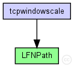
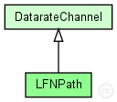

This documentation is released under the Creative Commons license
This documentation is released under the Creative Commons license(no description)
The following diagram shows usage relationships between types. Unresolved types are missing from the diagram.
The following diagram shows inheritance relationships for this type. Unresolved types are missing from the diagram.
| DatarateChannel (channel) | (no description) |
| tcpwindowscale (network) | (no description) |
| Name | Type | Default value | Description |
|---|---|---|---|
| disabled | bool | false | |
| delay | double | 565ms |
propagation delay |
| datarate | double | 1Gbps |
bits per second; 0=infinite |
| ber | double | 0 |
bit error rate (BER) |
| per | double | 0 |
packet error rate (PER) |
| Name | Value | Description |
|---|---|---|
| class | cDatarateChannel |
| Name | Type | Unit |
|---|---|---|
| messageDiscarded | cMessage | |
| messageSent | cMessage | |
| channelBusy | int |
| Name | Title | Source | Record | Unit | Interpolation Mode |
|---|---|---|---|---|---|
| utilization | timeavg(channelBusy) | last? | |||
| packetsDiscarded | constant1(messageDiscarded) | count? | none | ||
| packetBytes | packetBytes(messageSent) | sum? | B | none | |
| packets | constant1(messageSent) | count? | none | ||
| busy | channelBusy | vector? | sample-hold | ||
| throughput | sumPerDuration(packetBits(messageSent)) | last? | bps |
channel LFNPath extends DatarateChannel { parameters: datarate = 1Gbps; delay = 565ms; per = 0; ber = 0; }
This documentation is released under the Creative Commons license